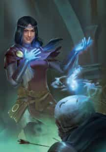

- 3 уровень, некромантия
- Время накладывания: 1 действие
- Дистанция: 10 футов
- Компоненты: В, С, М (горящие благовония)
- Длительность: 10 минут
- Классы: бард, волшебникTCE, жрец
- Подклассы: домен знаний (жрец), бессмертный (колдун), нежить (колдун)
Вы даёте подобие жизни и сознания трупу, выбранному в пределах дистанции, позволяя ему отвечать на задаваемые вами вопросы. У трупа должен быть рот, и он не может быть Нежитью. Заклинание проваливается, если этот труп был целью этого заклинания в течение последних 10 дней.
Пока заклинание не окончится, вы можете задать трупу пять вопросов. Труп знает только то, что знал при жизни, включая известные языки. Ответы обычно короткие, загадочные или невыразительные, и труп не обязан давать правдивый ответ, если вы враждебны к нему или он распознает в вас врага. Это заклинание не возвращает душу в тело существа, а только оживляет дух. Таким образом, труп не может узнавать новую информацию, не осознаёт того, что происходило после его смерти, и не может размышлять о будущих событиях.
Разговор с мёртвыми — Заклинания
Разговор с мёртвыми [Speak with dead]PH14 PH24
Галерея

Комментарии
Растение в ДНД не является существом. Однако есть существа с типом Растение. А у существ есть труп.
Есть ли у них у всех душа - вопрос открытый, но в описании указан дух (spirit), что оставляет ДМу решать, был ли он у существа, в частности, если бы речь шла о полноценной душе, неоткуда было бы взять ограничения по её неспособности рассказать о событиях после смерти.
Вопрос про фарш и кусочек дерева - неактуален. В описании заклинания нет требований о мере сохранности трупа, кроме головы; ДМ вполне вправе разрешить разговор с одной головой, например. Так что мебель, в корой сохранился рот существа, формально может соответствовать требованиям.
То, что «в-третьих» - совсем не по теме. Труп - предмет, но подходит под требования заклинания. Является ли трупом мёртвое тело, которому придали форму мебели или включили в состав мебели? С какой-то стадии нет, до - несомненно. Момент «фазового перехода» определяет ДМ.
Даже не знаю, почему те жрецы его не применяли, хоть это их родное заклинание
Следующие ответы противоречат [странной и не исправленной в 2024] формулировке заклинания, но традиционное прочтение именно таково, т.к. в противном случае весь абзац про ответы "недружественным существам" теряет смысл.
2 - Да.
3 - Нет.
можно предположить, что это буквально "продвинутый вариант мышечной памяти". И именно поэтому "дух" не знает произошедшего после смерти и "ломается" в ходе превращения в Нежить и обратно в труп.
... природа "it's (тела) animating spirit" неопределена ...
Можно предположить, что это буквально "продвинутый вариант мышечной памяти". И именно поэтому "дух" не знает произошедшего после смерти и "ломается" в ходе превращения в Нежить и обратно.
Иначе нафига, например, целое воззвание Могильный шёпот, аж на 9 уровне колдуна?
Судя по описанию, труп не поймет заклинателя и, скорее всего, не расценит вопросы, как таковые, и будет ждать их на своем языке, пока не кончится заклинание (10 минут)
«Труп знает только то, что знал при жизни»,
«труп не может узнавать новую информацию».
По сути он и отвечать не смог бы (не воспринял бы вопрос), если бы это не входило в описание заклинания явно.
Тогда как труп может понять, что «вы враждебны к нему» или как «он распознает в вас врага», если он не может знать, кто такой этот «вы»? Всё же это «Труп знает только то, что знал при жизни» должно быть дополнено «… и что узнал за время действия заклинания».
Уж лучше бы убрали эту лишнюю механику про "дух" и дали связь с настоящей душой. При сохранении всех ограничений. Это всего 5 вопросов, на которые душа может безнаказанно соврать. Череп любимого дедушки в качестве дружественного духа-подсказчика-справочника за ячейку 3 уровня (или воззвание)? Да что может пойти не так (с)
Её даже нельзя шантажировать, например, убийством потомков - она "не может размышлять о будущих событиях", т.е. не осознаёт последствия своих ответов.
Зато если душа недоступна (воскрешена в новом теле, поглощена личом, стала исчадием...) - абонент недоступен. Удобно.
откуда ограничения? Ну, это всего лишь 3 уровень, связь барахлит, души - дело сложное. Душа спит. Или чудовищно занята. Или ей сложно без тела. Миллион отмазок, ничего не ломающих, даже объясняющих конкретно ваше (не)уникальное мироустройство.
- Конечно, сможете!
- Доктор, вы - волшебник! Раньше-то я не мог...
При соблюдении остальных условий. Может, он немой из-за отсутствия нижней челюсти.
2024 даёт конкретный ответ: "spell fails if the deceased creature was Undead when it died". Нет оснований считать, что и в 5е это не было RAI.
"если он распознает в вас врага"
Из этого предположу что он не способен изучить тех, кто с ним говорит, но способен распознать их по памяти до смерти. Например, если он слышал голос персонажа игрока, и этот же персонаж задаёт ему вопросы.
Я бы не учитывал наличие глаз. Сказано что нужен рот, но не нужны связки. Сказано, что вопрос задаётся и ответ даётся, значит слух от ушей тоже не зависит. Так что нет причин полагать что глаза нужны.